This vignette covers everything about color in manimR, and the mobjects that are not made of Bezier paths drawn by hand: raster images, imported SVG files and clouds of points. For the shapes themselves, see Mobjects and geometry.
How colors are stored
A color in manimR is a hex string such as "#58C4DD".
Every argument that takes a color (color,
fill_color, stroke_color, …) accepts such a
string, a manim color name, or any color R knows:
BLUE
#> [1] "#58C4DD"
Circle(color = BLUE)$get_color()
#> [1] "#58C4DD"
Circle(color = "blue_d")$get_color() # manim names, any case
#> [1] "#29ABCA"
Circle(color = "tomato")$get_color() # R color names
#> [1] "#FF6347"
Circle(color = "#FF8800")$get_color()
#> [1] "#FF8800"Upstream manim wraps every color in a ManimColor object.
manimR has that class too (see ManimColor
objects), but plain strings are what mobjects store, so colors
print, compare and combine like any other R strings.
Named colors
The standard manim palette comes in families with five shades, from
_A (lightest) to _E (darkest). The name
without a suffix is the _C shade: BLUE is
BLUE_C. Gray is spelled both ways (GRAY_A and
GREY_A).
To draw the swatches below, this small helper uses base graphics. It
labels each swatch in black or white, whichever contrasts better, using
the contrasting() method of a ManimColor.
show_swatches <- function(cols, ncol = 5, cex = 0.7, show_hex = TRUE) {
n <- length(cols)
nrow <- ceiling(n / ncol)
op <- par(mar = c(0, 0, 0, 0))
on.exit(par(op))
plot.new()
plot.window(c(0, ncol), c(0, nrow), xaxs = "i", yaxs = "i")
i <- seq_len(n) - 1
x <- i %% ncol
y <- nrow - 1 - i %/% ncol
rect(x + 0.03, y + 0.06, x + 0.97, y + 0.94, col = unlist(cols), border = "grey85")
ink <- vapply(cols, function(cl) as.character(ManimColor(cl)$contrasting()), "")
text(x + 0.5, y + if (show_hex) 0.62 else 0.5, names(cols), cex = cex, col = ink)
if (show_hex) text(x + 0.5, y + 0.36, unlist(cols), cex = cex * 0.9, col = ink)
}
families <- c("BLUE", "TEAL", "GREEN", "YELLOW", "GOLD", "RED", "MAROON", "PURPLE", "GRAY")
shades <- unlist(lapply(families, function(f) paste0(f, "_", c("A", "B", "C", "D", "E"))))
show_swatches(mget(shades, envir = asNamespace("manimR")), ncol = 5)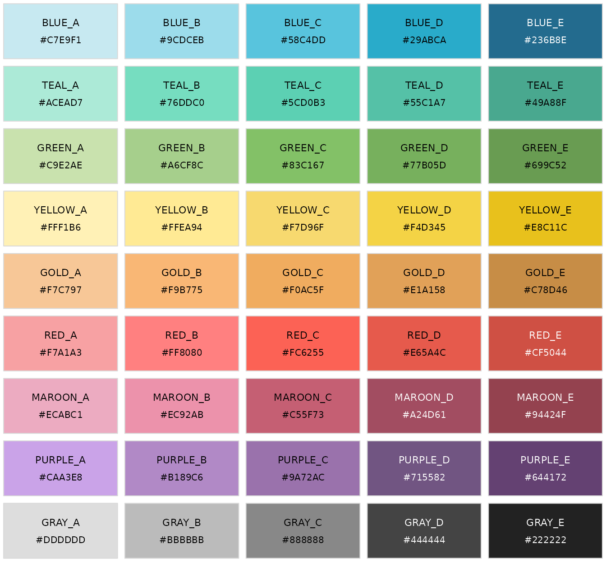
The remaining named colors are the grays, the pure primaries, a few singles and the colors of the manim logo:
others <- c("WHITE", "LIGHTER_GRAY", "LIGHT_GRAY", "GRAY", "DARK_GRAY", "DARKER_GRAY", "BLACK",
"PURE_RED", "PURE_GREEN", "PURE_BLUE", "PURE_CYAN", "PURE_MAGENTA", "PURE_YELLOW",
"DARK_BLUE", "PINK", "LIGHT_PINK", "ORANGE", "LIGHT_BROWN", "DARK_BROWN", "GRAY_BROWN",
"LOGO_WHITE", "LOGO_GREEN", "LOGO_BLUE", "LOGO_RED", "LOGO_BLACK")
show_swatches(mget(others, envir = asNamespace("manimR")), ncol = 7, cex = 0.62)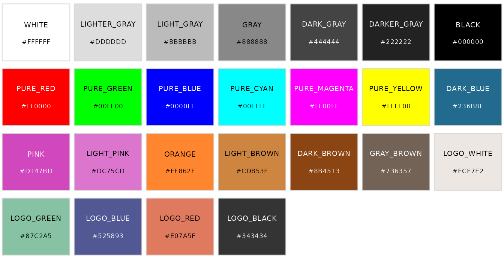
LIGHTER_GREY, LIGHT_GREY,
GREY, DARK_GREY, DARKER_GREY and
GREY_BROWN are the same colors under their British
spelling.
Color palettes
Six larger palettes from upstream’s color modules are named lists of
hex strings. Pick a color with $, as in
XKCD$AVOCADO. X11_COLORS is upstream’s
X11 (renamed so it does not mask
grDevices::X11()).
palettes <- list(X11_COLORS = X11_COLORS, XKCD = XKCD, SVGNAMES = SVGNAMES,
DVIPSNAMES = DVIPSNAMES, AS2700 = AS2700, BS381 = BS381)
vapply(palettes, length, integer(1))
#> X11_COLORS XKCD SVGNAMES DVIPSNAMES AS2700 BS381
#> 504 922 151 68 206 287
XKCD$AVOCADO
#> [1] "#90B134"
SVGNAMES$CORNFLOWERBLUE
#> [1] "#6395ED"
head(names(AS2700))
#> [1] "B11_RICH_BLUE" "B12_ROYAL_BLUE" "B13_NAVY_BLUE" "B14_SAPHHIRE"
#> [5] "B15_MID_BLUE" "B21_ULTRAMARINE"
head(names(BS381))
#> [1] "BS381_101" "SKY_BLUE" "BS381_102" "TURQUOISE_BLUE"
#> [5] "BS381_103" "PEACOCK_BLUE"-
X11_COLORSandSVGNAMES: the X11 and SVG named colors. -
XKCD: the color names of the xkcd color survey. -
DVIPSNAMES: the colors of LaTeX’sdvipsnamesoption. -
AS2700: the Australian standard colors (codes such asB11_RICH_BLUE). -
BS381: the British standard colors, by number (BS381_101) and by name.
Six evenly spaced samples from each palette:
samples <- unlist(lapply(names(palettes), function(p) {
pal <- palettes[[p]]
pick <- pal[round(seq(1, length(pal), length.out = 6))]
setNames(pick, paste0(p, "$\n", names(pick)))
}), recursive = FALSE)
show_swatches(samples, ncol = 6, cex = 0.58, show_hex = FALSE)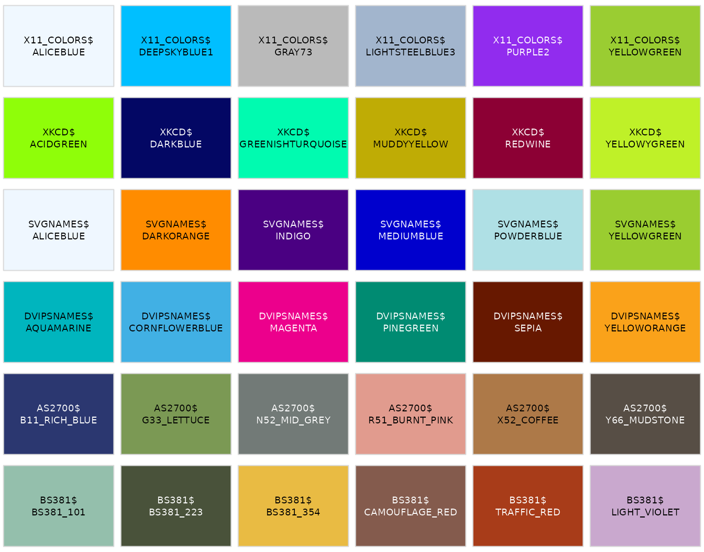
The list color mirrors upstream’s color
module, so ported code such as color.X11.BEIGE becomes
color$X11$BEIGE:
color$X11$BEIGE
#> [1] "#F5F5DC"
color$BLUE_C
#> [1] "#58C4DD"Parsing and converting colors
manim_color() turns anything color like into an
uppercase hex string: manim names (in any case), hex strings starting
with #, and R color names. The color_to_* and
*_to_color functions convert between hex and numeric
channels in [0, 1].
manim_color("red")
#> [1] "#FC6255"
manim_color("blue_d")
#> [1] "#29ABCA"
manim_color("tomato")
#> [1] "#FF6347"
color_to_rgb(BLUE)
#> [1] 0.3450980 0.7686275 0.8666667
color_to_rgba(BLUE, alpha = 0.5)
#> [1] 0.3450980 0.7686275 0.8666667 0.5000000
rgb_to_color(c(1, 0.5, 0))
#> ManimColor('#FF7F00')
rgba_to_color(c(1, 0.5, 0, 0.5))
#> ManimColor('#FF7F00')More conversions handle integer channels (0 to 255), hex and HSV
(hue, saturation and value, each in [0, 1]):
color_to_int_rgb(BLUE)
#> [1] 88 196 221
color_to_int_rgba(BLUE, alpha = 0.5)
#> [1] 88 196 221 127
rgb_to_hex(c(1, 0, 0))
#> ManimColor('#FF0000')
hex_to_rgb("#58C4DD")
#> [1] 0.3450980 0.7686275 0.8666667
color_to_hsv(BLUE)
#> h s v
#> 0.5313283 0.6018100 0.8666667
color_from_hsv(0.5, 1, 1)
#> ManimColor('#00FFFF')Color arithmetic
interpolate_color() blends two colors and
color_gradient() spreads any number of colors over a
sequence. average_color() averages several colors,
invert_color() takes the complement, and
lighter_color() and darker_color() blend
toward white or black.
interpolate_color(RED, BLUE, 0.5)
#> ManimColor('#AA9399')
color_gradient(c(RED, YELLOW, GREEN), 5)
#> [1] "#FC6255" "#F99D61" "#F7D96F" "#BDCD6B" "#83C167"
average_color(RED, BLUE, GREEN)
#> ManimColor('#9DA288')
invert_color(RED)
#> ManimColor('#029DAA')
lighter_color(RED, blend = 0.3)
#> ManimColor('#FC9188')
darker_color(RED, blend = 0.3)
#> ManimColor('#B0443B')The picture shows a gradient of 24 steps and a ladder of lighter and
darker versions of BLUE.
bar <- VGroup(lapply(color_gradient(c(BLUE, GREEN, YELLOW, RED), 24), function(cl) {
Rectangle(width = 0.45, height = 1, stroke_width = 0, fill_color = cl, fill_opacity = 1)
}))$arrange(RIGHT, buff = 0)
blends <- c(seq(0.8, 0.2, by = -0.2), 0, seq(0.2, 0.8, by = 0.2))
ladder <- VGroup(lapply(seq_along(blends), function(i) {
cl <- if (i < 5) darker_color(BLUE, blends[i]) else if (i == 5) BLUE else lighter_color(BLUE, blends[i])
Square(side_length = 0.9, stroke_width = 0, fill_color = cl, fill_opacity = 1)
}))$arrange(RIGHT, buff = 0.1)
plot(VGroup(bar, ladder)$arrange(DOWN, buff = 0.6))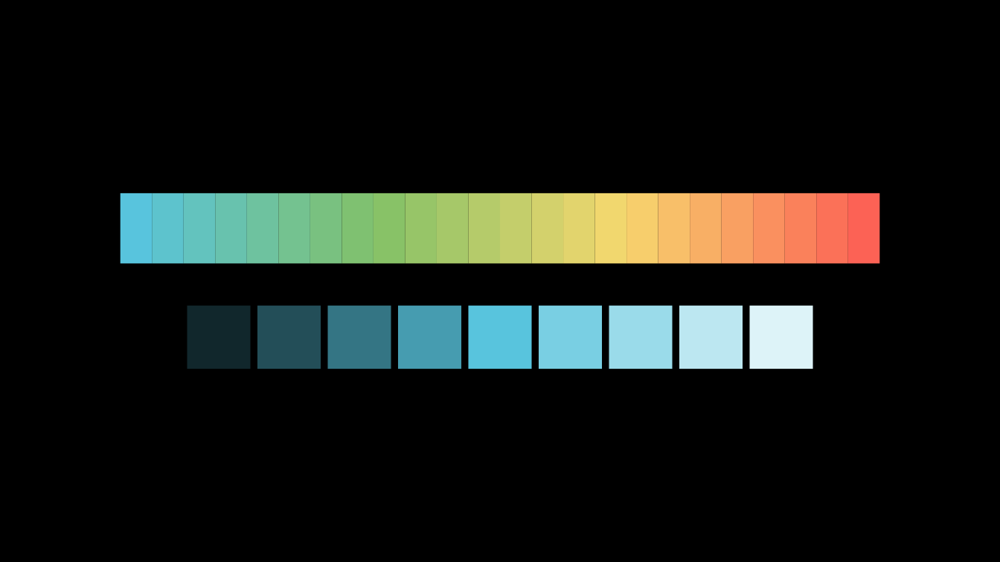
Random colors
random_color() picks one of the manim colors and
random_bright_color() blends a random one halfway to white.
They use R’s random number generator, so set.seed() makes
them repeatable. RandomColorGenerator() has its own stream:
with a seed it repeats the same sequence without touching R’s global
seed. Its next_color() method (also callable as
gen$`next`(), since next is reserved in R)
returns the next color, chosen from sample_colors when
given. Its generator is RandomColorGeneratorClass.
set.seed(1)
random_color()
#> [1] "#9A72AC"
random_bright_color()
#> ManimColor('#909090')
gen <- RandomColorGenerator(seed = 42)
c(gen$next_color(), gen$`next`(), gen$next_color())
#> [1] "#E07A5F" "#9A72AC" "#444444"
again <- RandomColorGenerator(seed = 42)
again$next_color() # the same first color
#> ManimColor('#E07A5F')
traffic <- RandomColorGenerator(seed = 1, sample_colors = c(RED, YELLOW, GREEN))
replicate(5, traffic$next_color())
#> [1] "#FC6255" "#83C167" "#FC6255" "#F7D96F" "#FC6255"ManimColor objects
ManimColor() (also called RGBA()) builds
upstream’s color object. It is a hex string with an exact RGBA value
attached, so it works anywhere a color does, and it brings upstream’s
methods through $. It accepts names, hex strings (with
# or 0x), integers such as
0xFF0000, and three or four channels, either in
[0, 1] or as integers from 0 to 255.
ManimColor("#FF0000")
#> ManimColor('#FF0000')
ManimColor("blue_d")
#> ManimColor('#29ABCA')
ManimColor(0x00FF00)
#> ManimColor('#00FF00')
ManimColor(c(1, 0.5, 0))
#> ManimColor('#FF7F00')
ManimColor(c(255L, 128L, 0L))
#> ManimColor('#FF8000')
RGBA(c(1, 0, 0, 0.5))
#> ManimColor('#FF0000')
Square(color = ManimColor(0x00FF00))$get_color()
#> [1] "#00FF00"Conversions
red <- ManimColor("#FF0000")
red$to_rgb()
#> [1] 1 0 0
red$to_int_rgb()
#> [1] 255 0 0
red$to_rgba()
#> [1] 1 0 0 1
red$to_int_rgba()
#> [1] 255 0 0 255
red$to_rgba_with_alpha(0.5)
#> [1] 1.0 0.0 0.0 0.5
red$to_int_rgba_with_alpha(0.5)
#> [1] 255 0 0 127
red$to_hex()
#> [1] "#FF0000"
red$to_hex(with_alpha = TRUE)
#> [1] "#FF0000FF"
red$to_hsv()
#> [1] 0 1 1
red$to_hsl()
#> [1] 0.0 1.0 0.5
red$to_integer()
#> [1] 16711680
as.integer(red)
#> [1] 16711680
as.character(red)
#> [1] "#FF0000"
format(red)
#> [1] "#FF0000"Methods that return new colors
invert(), interpolate(),
darker(), lighter(),
contrasting(), opacity() and
into() all return a new color and leave the original alone.
contrasting() returns white for dark colors and black for
light ones (or the light and dark colors you
pass), and into() converts to another color class such as
HSVClass.
red$invert()
#> ManimColor('#00FFFF')
red$interpolate(ManimColor(BLUE), 0.5)
#> ManimColor('#AB626E')
red$darker(0.4)
#> ManimColor('#990000')
red$lighter(0.4)
#> ManimColor('#FF6666')
ManimColor(YELLOW)$contrasting()
#> ManimColor('#000000')
ManimColor(DARK_BLUE)$contrasting()
#> ManimColor('#FFFFFF')
red$opacity(0.3)$to_rgba()
#> [1] 1.0 0.0 0.0 0.3
red$into(HSVClass)
#> HSV('#FF0000')A mobject stores plain hex strings, so wrap one to use the methods:
sq <- Square(color = TEAL)
ManimColor(sq$get_color())$darker()
#> ManimColor('#49A68F')Arithmetic and comparison
Arithmetic works channel by channel, with numbers or other colors. Channels are not clipped, as in upstream, so keep results inside the valid range (for example by averaging rather than adding two colors).
(ManimColor(BLUE) + ManimColor(RED)) / 2
#> ManimColor('#AA9399')
ManimColor(BLUE) * 0.5
#> ManimColor('#2C626E')
ManimColor(BLUE) - 0.1
#> ManimColor('#3EAAC3')
ManimColor(BLUE) == ManimColor("#58C4DD")
#> [1] TRUE
!ManimColor(BLUE) # inversion
#> ManimColor('#A73A21')
ManimColor(0xFF0000) | ManimColor(0x0000FF) # combines the integer values
#> ManimColor('#FF00FF')Class methods
Upstream’s class methods live on the generator
ManimColorClass:
ManimColorClass$from_rgb(c(1, 0, 0))
#> ManimColor('#FF0000')
ManimColorClass$from_rgba(c(1, 0, 0, 0.5))
#> ManimColor('#FF0000')
ManimColorClass$from_hex("#00FF00", alpha = 0.5)
#> ManimColor('#00FF00')
ManimColorClass$from_hsv(c(0.5, 1, 1))
#> ManimColor('#00FFFF')
ManimColorClass$from_hsl(c(0.5, 1, 0.5))
#> ManimColor('#00FEFF')
ManimColorClass$parse(c(RED, BLUE))
#> [[1]]
#> ManimColor('#FC6255')
#>
#> [[2]]
#> ManimColor('#58C4DD')
ManimColorClass$gradient(c(RED, BLUE), 3)
#> [[1]]
#> ManimColor('#FC6255')
#>
#> [[2]]
#> ManimColor('#AA9399')
#>
#> [[3]]
#> ManimColor('#58C4DD')
ManimColorDType
#> [1] "double"HSV colors
HSV() holds a color as hue, saturation and value. Read
or set the channels with $hue, $saturation and
$value (or $h, $s,
$v), and the color updates. HSVClass has the
same class methods as ManimColorClass.
h <- HSV(c(0.25, 1, 1))
h
#> HSV('#7FFF00')
h$hue <- 0.5
h
#> HSV('#00FFFF')
h$saturation
#> [1] 1
as.character(h)
#> [1] "#00FFFF"
HSVClass$from_rgb(c(1, 0, 0))
#> HSV('#FF0000')Varying the hue gives a quick rainbow:
hues <- seq(0, 1, length.out = 13)[-13]
rainbow_dots <- VGroup(lapply(hues, function(hh) Dot(radius = 0.35, color = as.character(HSV(c(hh, 0.7, 1))))))
plot(rainbow_dots$arrange_in_grid(rows = 2, buff = 0.3))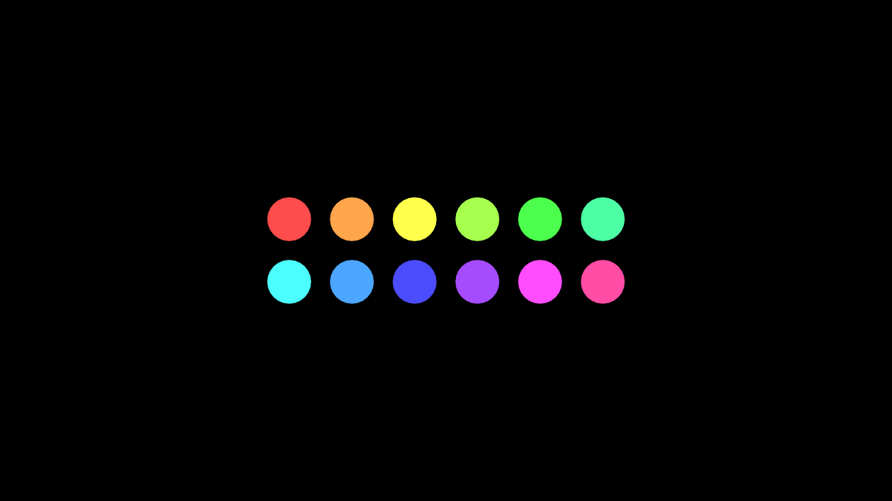
Coloring mobjects
The basic methods are set_color() (fill and stroke),
set_fill() and set_stroke(); they are covered
in Mobjects and geometry. This section is
about the ways to put more than one color on a mobject.
Gradients
Give set_color(), set_fill() or
set_stroke() several colors and the fill or stroke becomes
a linear gradient. The gradient runs along the mobject’s
sheen_direction (UL by default; change it with
set_sheen_direction()).
a <- Square()$set_fill(c(RED, BLUE), opacity = 1)
b <- Square(stroke_width = 0)$set_fill(c(RED, BLUE), opacity = 1)$set_sheen_direction(RIGHT)
cc <- Circle()$set_fill(YELLOW, opacity = 1)$set_stroke(c(GREEN, PURPLE), width = 14)
d <- Star(fill_opacity = 1)$set_color(c(PINK, YELLOW))
plot(VGroup(a, b, cc, d)$arrange(RIGHT, buff = 0.6))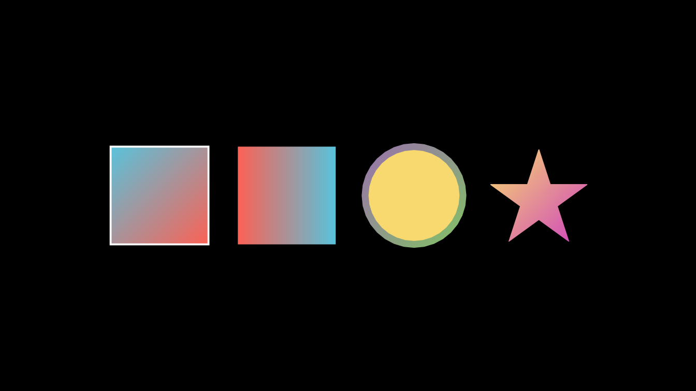
a$get_fill_colors()
#> [1] "#FC6255" "#58C4DD"
a$get_sheen_direction()
#> [1] -1 1 0For groups, set_color_by_gradient() colors the
submobjects one after the other along a gradient, and
set_colors_by_radial_gradient() colors them by their
distance from a center.
dots <- VGroup(lapply(1:16, function(i) Dot(radius = 0.18)))$arrange(RIGHT, buff = 0.15)
dots$set_color_by_gradient(BLUE, GREEN, YELLOW)
tiles <- VGroup(lapply(1:81, function(i) Square(side_length = 0.3, fill_opacity = 1, stroke_width = 1)))
tiles$arrange_in_grid(rows = 9, buff = 0.04)
tiles$set_colors_by_radial_gradient(radius = 1.5, inner_color = YELLOW, outer_color = RED)
plot(VGroup(dots, tiles)$arrange(DOWN, buff = 0.5))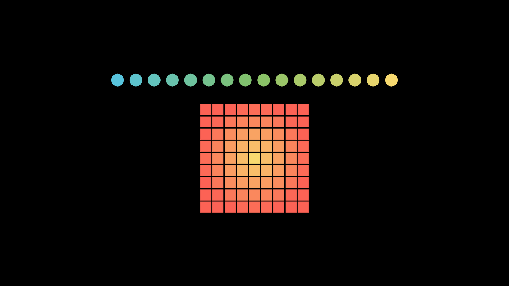
Sheen
set_sheen(factor, direction) lightens the fill toward
one side, which gives flat shapes a little depth. A negative factor
darkens instead.
shapes <- VGroup(
Square(fill_opacity = 1, color = BLUE)$set_sheen(0.6, UR),
Circle(fill_opacity = 1, color = RED)$set_sheen(0.8, UL),
RegularPolygon(6, fill_opacity = 1, color = GREEN)$set_sheen(-0.6, DOWN)
)$arrange(RIGHT, buff = 1)
plot(shapes)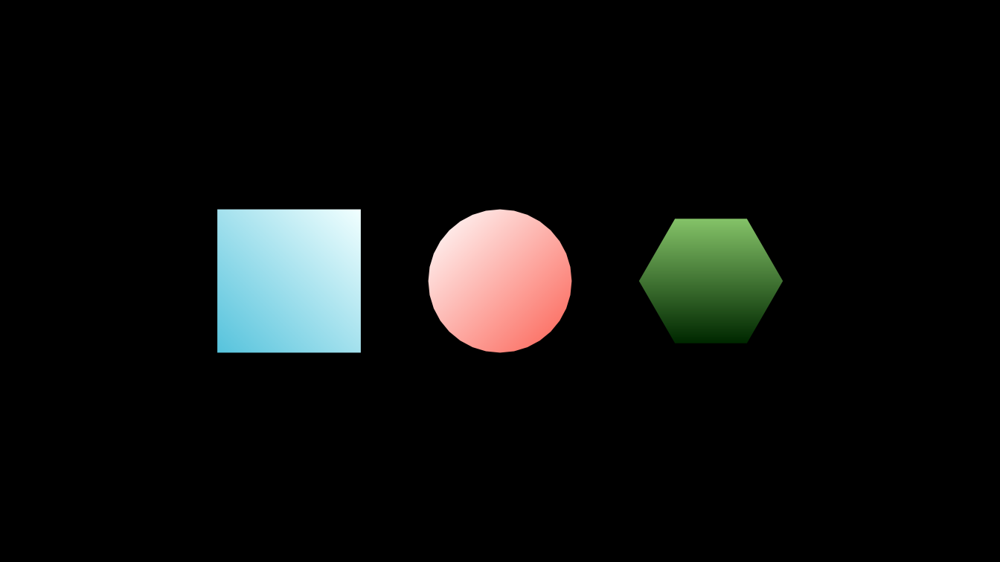
c(shapes[1]$get_sheen_factor(), shapes[3]$get_sheen_factor())
#> [1] 0.6 -0.6Coloring with an image
color_using_background_image() fills a VMobject with the
matching part of an image, given as a file or as an array of values in
[0, 1]. Here two shapes share one gradient image:
BackgroundColored <- R6::R6Class("BackgroundColored", inherit = Scene,
public = list(construct = function() {
x <- seq(0, 1, length.out = 200)
img <- array(0, c(200, 200, 3))
img[, , 1] <- outer(x, x, function(a, b) a)
img[, , 2] <- outer(x, x, function(a, b) b)
img[, , 3] <- 0.6
sq <- Square(side_length = 3, fill_opacity = 1)$shift(3 * LEFT)
ci <- Circle(radius = 1.5, fill_opacity = 1)$shift(3 * RIGHT)
VGroup(sq, ci)$color_using_background_image(img)
self$play(DrawBorderThenFill(sq), DrawBorderThenFill(ci), run_time = 1.5)
self$play(Rotate(sq, PI / 4), ci$animate$shift(LEFT), run_time = 1)
})
)Images
Making an ImageMobject
ImageMobject() shows a raster image. It accepts a PNG
file name, a numeric array with values from 0 to 255 (a matrix for gray,
or an h x w x 3 or h x w x 4 array), a raster
from as.raster(), a nativeRaster, or a
character matrix of colors. Images are stored as RGBA arrays of values 0
to 255.
gray <- ImageMobject(matrix(c(0, 100, 30, 200, 255, 0, 5, 33), nrow = 2, byrow = TRUE))
dim(gray$pixel_array)
#> [1] 2 4 4
z <- outer(seq(-2, 2, length.out = 60), seq(-2, 2, length.out = 90), function(y, x) sin(x^2 + y^2))
heat <- ImageMobject(matrix(hcl.colors(100, "Plasma")[cut(z, 100)], nrow = 60))
dim(heat$get_pixel_array())
#> [1] 60 90 4
png_file <- tempfile(fileext = ".png")
rgb_array <- array(0, c(64, 64, 3))
rgb_array[, , 1] <- outer(1:64, 1:64, function(i, j) i / 64)
rgb_array[, , 2] <- outer(1:64, 1:64, function(i, j) j / 64)
rgb_array[, , 3] <- 0.5
png::writePNG(rgb_array, png_file)
from_file <- ImageMobject(png_file)
from_native <- ImageMobject(png::readPNG(png_file, native = TRUE))
from_raster <- ImageMobject(as.raster(rgb_array))
c(from_file$width, from_file$height)
#> [1] 0.4740741 0.4740741The size follows scale_to_resolution: an image is shown
pixel for pixel at that vertical resolution (1080 by default), so the 64
pixel tall image above is 64 / 1080 * 8 units tall. Set
height or width (or use scale())
to resize; images move, scale and rotate like any mobject.
for (img in list(gray, heat, from_file)) img$height <- 2.5
from_native$height <- 1.2
from_raster$height <- 1.2
from_native$rotate(PI / 8)
plot(Group(gray, heat, from_file, Group(from_native, from_raster)$arrange(DOWN))$arrange(RIGHT, buff = 0.4))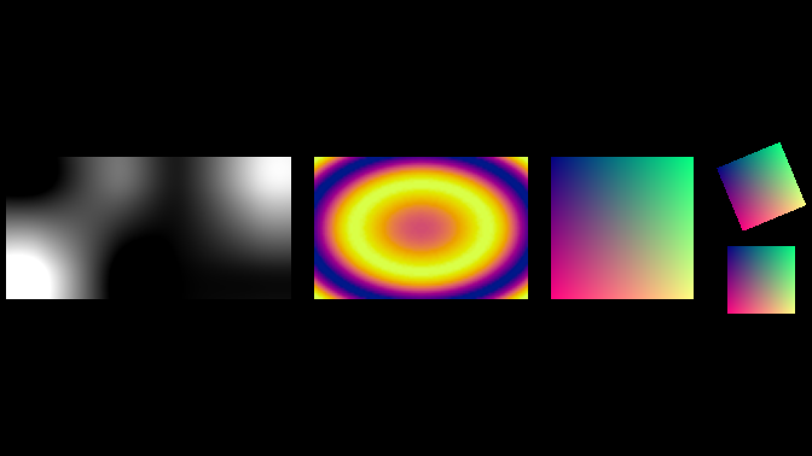
Resampling, opacity, inversion and modes
When an image is drawn larger than its pixels,
set_resampling_algorithm() decides how the gaps are filled.
The accepted names are listed in RESAMPLING_ALGORITHMS. As
with Pillow’s transform in Python manim, "nearest" shows
sharp pixel blocks, "bilinear" blends neighboring pixels
linearly and "bicubic" (the default) uses Pillow’s bicubic
filter, which is a little sharper. Pillow’s transform cannot use
"lanczos", "box" or "hamming", so
Python manim’s camera raises an error for them; manimR draws them as
"bilinear". OpenGLImageMobject() upscales
image arrays with all six filters, as Pillow’s resize()
does.
RESAMPLING_ALGORITHMS
#> nearest none lanczos antialias bilinear linear bicubic
#> "nearest" "nearest" "lanczos" "lanczos" "bilinear" "bilinear" "bicubic"
#> cubic box hamming
#> "bicubic" "box" "hamming"set_opacity() makes an image transparent,
invert = TRUE inverts its colors, and
image_mode converts an image read from a file:
"RGBA" (the default), "RGB" (drops the alpha
channel) or "L" (luminance, gray).
tiny <- matrix(c(0, 255, 60, 200, 120, 30, 255, 90, 160), 3)
blocky <- ImageMobject(tiny)$set_resampling_algorithm("nearest")
smooth <- ImageMobject(tiny)$set_resampling_algorithm("bilinear")
behind <- Square(side_length = 2.2, color = YELLOW, fill_opacity = 1)
faded <- ImageMobject(png_file)$set_opacity(0.4)
inverted <- ImageMobject(png_file, invert = TRUE)
luminance <- ImageMobject(png_file, image_mode = "L")
for (img in list(blocky, smooth, faded, inverted, luminance)) img$height <- 2
faded$move_to(behind)
plot(Group(blocky, smooth, Group(behind, faded), inverted, luminance)$arrange(RIGHT, buff = 0.3))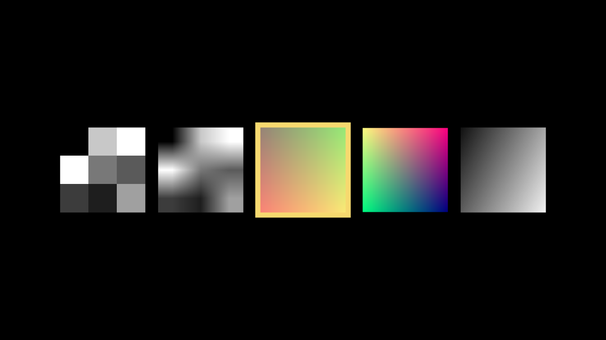
get_raster() returns the image as an array in
[0, 1], ready for grid::grid.raster(), and
get_pixel_array() returns the stored 0 to 255 array.
Animating images
ImageMobject() creates an object of class
ImageMobjectClass, which inherits from
AbstractImageMobjectClass (the base class it shares with
ImageMobjectFromCameraClass); subclass these generators for
image mobjects of your own.
Images take part in animations like other mobjects. A
Transform between two images of the same pixel size blends
their pixels:
ImageAnimation <- R6::R6Class("ImageAnimation", inherit = Scene,
public = list(construct = function() {
x <- seq(-3, 3, length.out = 80)
pattern <- function(f, palette) {
z <- outer(x, x, f)
matrix(hcl.colors(64, palette)[cut(z, 64)], nrow = length(x))
}
rings <- ImageMobject(pattern(function(a, b) sin(a^2 + b^2), "Viridis"))
waves <- ImageMobject(pattern(function(a, b) sin(2 * a) + cos(3 * b), "Plasma"))
for (img in list(rings, waves)) img$height <- 5
self$play(FadeIn(rings), run_time = 1)
self$play(rings$animate$rotate(PI / 4)$scale(0.8), run_time = 1)
self$play(Transform(rings, waves$rotate(PI / 4)$scale(0.8)), run_time = 1.5)
})
)Image helpers
Three helpers from manim.utils.images work on 0 to 255
image arrays. change_to_rgba_array() adds the missing
channels, invert_image() returns 255 - image
(alpha included, as upstream) and drag_pixels() fills the
black pixels of each frame from the frames that came before, leaving a
trail.
dim(change_to_rgba_array(matrix(c(1, 2, 3, 4), 2)))
#> [1] 2 2 4
change_to_rgba_array(array(100, c(1, 1, 3)))[1, 1, ]
#> [1] 100 100 100 255
invert_image(array(c(0, 255, 100, 255), c(1, 1, 4)))[1, 1, ]
#> [1] 255 0 155 0
frames <- lapply(1:5, function(k) {
a <- array(0, c(10, 20, 3))
a[4:7, (4 * k - 3):(4 * k - 1), ] <- 255 * k / 5
a
})
trail <- drag_pixels(frames)
show_row <- function(arrays) Group(lapply(arrays, function(a) {
img <- ImageMobject(a)$set_resampling_algorithm("nearest")
img$height <- 1.2
Group(img, SurroundingRectangle(img, buff = 0, color = GREY_C, stroke_width = 2))
}))$arrange(RIGHT, buff = 0.2)
plot(Group(show_row(frames), show_row(trail))$arrange(DOWN, buff = 0.4))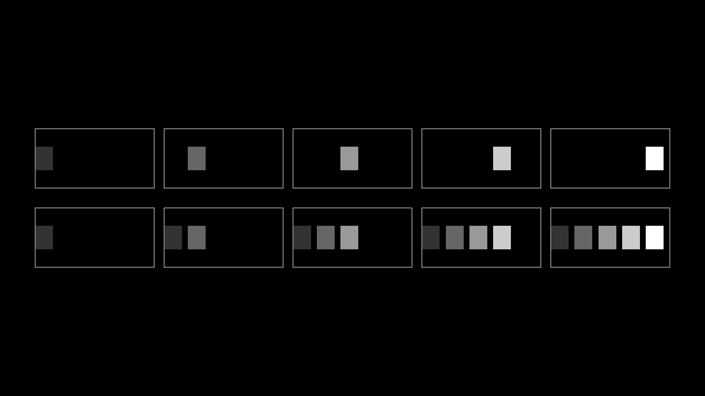
The top row shows five frames of a moving block, the bottom row what
drag_pixels() makes of them.
A background image for the scene
A camera can draw an image instead of the plain background color:
pass background_image (a file name or an array of values in
[0, 1]) when the scene is created. Override
initialize() in your scene class to do that. The image is
drawn at its own pixel size from the top left corner, not stretched, so
make it as large as the frame; config$pixel_width and
config$pixel_height give the size of the current
render.
SkyScene <- R6::R6Class("SkyScene", inherit = Scene,
public = list(
initialize = function(...) {
h <- config$pixel_height
w <- config$pixel_width
shade <- seq(0, 1, length.out = h)
sky <- array(0, c(h, w, 3))
sky[, , 1] <- 0.1 * shade
sky[, , 2] <- 0.2 + 0.3 * shade
sky[, , 3] <- 0.5 + 0.4 * (1 - shade)
super$initialize(background_image = sky, ...)
},
construct = function() {
star <- Star(color = YELLOW, fill_opacity = 1)$shift(2 * LEFT + DOWN)
self$play(GrowFromCenter(star), run_time = 1)
self$play(star$animate$move_to(2 * RIGHT + UP)$scale(1.5), run_time = 1.5)
}
)
)Images of another camera
ImageMobjectFromCamera() shows what a second camera
sees. It is the building block of ZoomedScene (see Cameras and 3D), and can be used
directly: give the scene a MultiCameraClass camera, make a
MovingCameraClass camera, wrap it in
ImageMobjectFromCamera(), and register it with
add_image_mobject_from_camera(). Moving the second camera’s
frame changes what the display shows.
PictureInPicture <- R6::R6Class("PictureInPicture", inherit = MovingCameraScene,
public = list(
default_camera_class = function() MultiCameraClass,
construct = function() {
shapes <- VGroup(Circle(fill_opacity = 1, color = RED), Square(fill_opacity = 1, color = BLUE),
Triangle(fill_opacity = 1, color = GREEN))$arrange(RIGHT)$shift(2 * LEFT + DOWN)
cam <- MovingCameraClass$new(default_frame_stroke_width = 3)
display <- ImageMobjectFromCamera(cam)
display$add_display_frame()
for (mob in list(cam$frame, display)) {
mob$stretch_to_fit_height(2.5)
mob$stretch_to_fit_width(3.5)
}
cam$frame$scale(0.6)$move_to(shapes[1])
display$to_corner(UR)
self$camera$add_image_mobject_from_camera(display)
self$add(shapes, cam$frame, display)
self$play(cam$frame$animate$move_to(shapes[3]), run_time = 2)
}
)
)SVG files
Importing an SVG
SVGMobject() reads an SVG file into a group of
VMobjects, one per shape. Paths, rectangles, circles, ellipses, lines,
polylines, polygons, groups, <use> references,
transforms, CSS styles and fill and stroke attributes are supported;
<text> elements are skipped with a warning, as
upstream does (convert text to paths first). The file below is written
to a temporary file so the example is self contained.
svg_file <- tempfile(fileext = ".svg")
writeLines(c(
'<svg xmlns="http://www.w3.org/2000/svg" viewBox="0 0 200 160">',
' <style>.wall { fill: #F7D96F; stroke: #FFFFFF; stroke-width: 2; }</style>',
' <rect class="wall" x="40" y="70" width="120" height="80"/>',
' <polygon points="30,72 100,15 170,72" fill="#FC6255"/>',
' <rect x="88" y="105" width="24" height="45" fill="#8B4513"/>',
' <circle cx="65" cy="98" r="12" fill="#58C4DD" stroke="#FFFFFF" stroke-width="2"/>',
' <ellipse cx="135" cy="98" rx="14" ry="10" fill="#58C4DD"/>',
' <line x1="0" y1="150" x2="200" y2="150" stroke="#83C167" stroke-width="4"/>',
' <polyline points="15,35 25,27 35,35 45,27 55,35" fill="none" stroke="#FFFFFF" stroke-width="2"/>',
' <g transform="translate(130 10) scale(0.5)">',
' <path d="M 10 40 C 10 10, 50 10, 50 40 S 90 70, 90 40" fill="none" stroke="#BBBBBB" stroke-width="6"/>',
' </g>',
'</svg>'), svg_file)
house <- SVGMobject(svg_file, height = 4)
print_family(house)
#> SVGMobject 3c452af6d2041466a8-523
#> Rectangle 3c452af6d2041466a8-528
#> Polygon 3c452af6d2041466a8-531
#> Rectangle 3c452af6d2041466a8-533
#> Circle 3c452af6d2041466a8-536
#> Circle 3c452af6d2041466a8-538
#> Line 3c452af6d2041466a8-540
#> VMobject 3c452af6d2041466a8-542
#> VMobjectFromSVGPath 3c452af6d2041466a8-545By default the result is centered and scaled to
height = 2; pass height or width
to choose the size and should_center = FALSE to keep the
file’s position. Style arguments override the file’s styles, and
svg_default sets the style of elements that do not set
their own.
plain <- SVGMobject(svg_file, height = 4, stroke_width = 0)
recolored <- SVGMobject(svg_file, height = 4, fill_color = GREY_B, stroke_color = WHITE, stroke_width = 1)
row <- VGroup(house$copy(), plain, recolored)$arrange(RIGHT, buff = 0.3)
row$width <- 13
plot(row)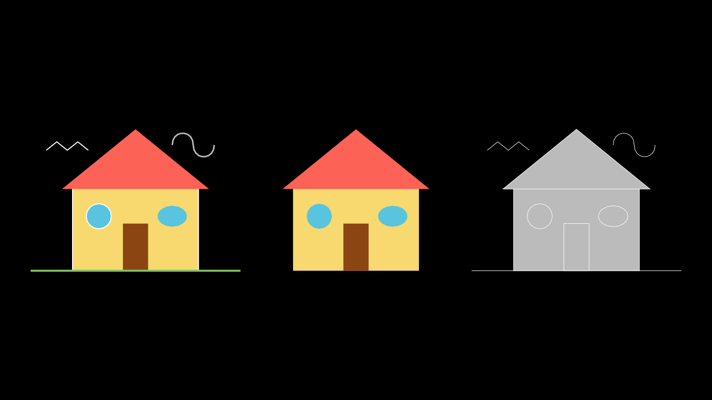
The middle copy has no strokes, so the stroke only parts (the ground line, the bird and the smoke) disappear. Each shape is a submobject, so index it to change one part:
length(house)
#> [1] 8
class(house[2])[1]
#> [1] "Polygon"
house[2]$set_fill(PURPLE)
house[4]$set_fill(ORANGE)
plot(house)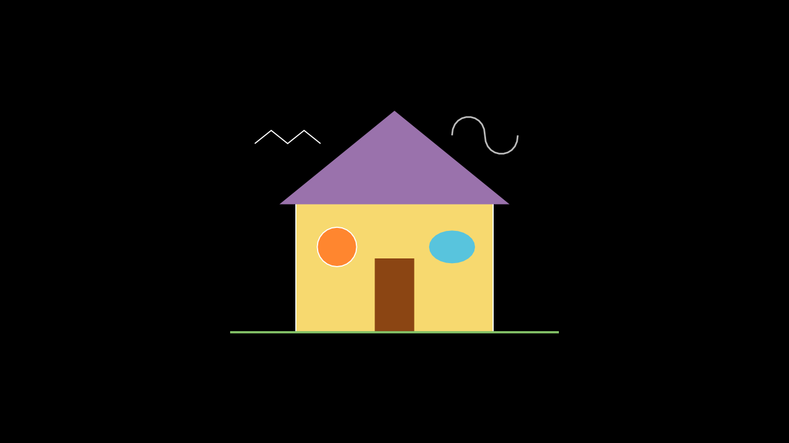
use_svg_cache = TRUE (the default) reuses an earlier
import of the same file, and path_string_config passes
options on to the path parser. The class generators are
SVGMobjectClass and VMobjectFromSVGPathClass;
each import step is a method, so a subclass can change one of them.
Drawing an SVG
An imported SVG animates like any VMobject.
DrawBorderThenFill() traces the outlines and then fills
them:
DrawHouse <- R6::R6Class("DrawHouse", inherit = Scene,
public = list(construct = function() {
house <- SVGMobject(svg_file, height = 5)
self$play(DrawBorderThenFill(house), run_time = 2)
self$play(house[2]$animate$set_fill(PURPLE), run_time = 0.8)
})
)Single paths
VMobjectFromSVGPath() turns the d attribute
of an SVG <path> into a VMobject directly. It keeps
SVG coordinates, in which y grows downward, so flip the result
(SVGMobject() does this for you):
heart_path <- "M 10,30 A 20,20 0,0,1 50,30 A 20,20 0,0,1 90,30 Q 90,60 50,90 Q 10,60 10,30 z"
raw <- VMobjectFromSVGPath(heart_path, color = RED, fill_opacity = 1)
c(raw$width, raw$height)
#> [1] 80.30938 80.52252
upright <- raw$copy()$flip(RIGHT)
hearts <- VGroup(raw, upright)
hearts$height <- 3
plot(hearts$arrange(RIGHT, buff = 1.5))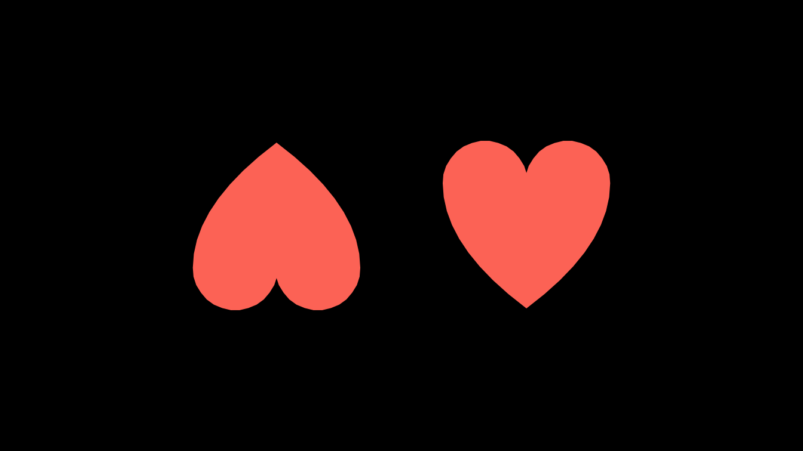
long_lines, should_subdivide_sharp_curves
and should_remove_null_curves are accepted for
compatibility with upstream’s OpenGL renderer.
Point clouds
Point cloud mobjects are made of points rather than curves: each
point is drawn as a small square stroke_width pixels wide,
with its own color. The colors are stored in the rgbas
matrix, one RGBA row per point.
-
PMobject()is an empty cloud.add_points(points, rgbas, color, alpha)appends points with one color or a color per point. -
Mobject1D(density)addsadd_line(start, end, color), which samples a segmentdensitypoints per unit. -
Mobject2D(density)is the two dimensional version, a cloud with a density per unit area. -
PointCloudDot(center, radius, density)fills a disc with rings of points, andPoint(location)is a single point. -
PGroup()groups point clouds.
Their class generators, for subclassing, are
PMobjectClass, Mobject1DClass,
Mobject2DClass, PointCloudDotClass,
PointClass and PGroupClass.
set.seed(7)
cloud <- PMobject(stroke_width = 3)
cloud$add_points(cbind(rnorm(500, sd = 0.7), rnorm(500, sd = 0.7), 0))
dim(cloud$points)
#> [1] 500 3
dim(cloud$rgbas)
#> [1] 500 4
cloud$set_colors_by_radial_gradient(radius = 2.5, inner_color = YELLOW, outer_color = RED)
tri <- Mobject1D(density = 20, stroke_width = 4)
corners <- list(c(-1, -1, 0), c(1, -1, 0), c(0, 0.8, 0))
for (k in 1:3) tri$add_line(corners[[k]], corners[[k %% 3 + 1]], color = c(BLUE, GREEN, PURPLE)[k])
grid_pts <- as.matrix(expand.grid(x = seq(-1, 1, by = 1 / 5), y = seq(-1, 1, by = 1 / 5), z = 0))
patch <- Mobject2D(density = 5, stroke_width = 4)
patch$add_points(grid_pts, color = TEAL)
disc <- PointCloudDot(radius = 1, density = 12, stroke_width = 3)
disc$set_color_by_gradient(BLUE, GREEN)
nrow(disc$points)
#> [1] 478The methods thin_out(factor) (keep every
factorth point), filter_out(condition) (drop
the points for which condition(point) is true),
sort_points(fn) and fade_to(color, alpha)
reshape a cloud:
thin <- disc$copy()$thin_out(3)
nrow(thin$points)
#> [1] 160
half <- disc$copy()$filter_out(function(p) p[1] > 0)
nrow(half$points)
#> [1] 233
cloud$copy()$sort_points(function(p) p[2])$points[1, ] # the lowest point
#> [1] -0.9455574 -1.8350181 0.0000000Points are measured in pixels, so point clouds are best seen in a rendered scene. This one shows the clouds above and then reshapes them:
PointClouds <- R6::R6Class("PointClouds", inherit = Scene,
public = list(construct = function() {
group <- PGroup(cloud, tri, patch, disc, Point(c(0, 3, 0), color = WHITE))
cloud$move_to(4.5 * LEFT)
tri$move_to(1.5 * LEFT)
patch$move_to(1.5 * RIGHT)
disc$move_to(4.5 * RIGHT)
self$play(FadeIn(group), run_time = 1)
self$play(Rotate(tri, PI), cloud$animate$fade_to(BLUE, 0.6),
disc$animate$filter_out(function(p) p[2] < disc$get_center()[2]), run_time = 1.5)
})
)OpenGL point clouds
Upstream’s OpenGL renderer has its own point clouds, drawn as round
dots of radius stroke_width / 100 units. They are ported so
that scenes written for it run; manimR draws them with the same renderer
as everything else.
-
OpenGLPMobject()is an empty cloud; add points withadd_points(). -
OpenGLPMPoint(location)is a single dot. -
DotCloud(radius, density)fills a disc with rings of dots.make_3d()stores upstream’s gloss and shadow, which only affect upstream’s shader. -
TrueDot()is aDotCloud; as upstream, its initializer ends up making the default cloud of radius 2 at the origin. -
OpenGLPGroup()groups OpenGL point clouds.
The generators are OpenGLPMobjectClass,
OpenGLPMPointClass, DotCloudClass,
TrueDotClass and OpenGLPGroupClass.
ring <- OpenGLPMobject(color = GREEN, stroke_width = 8)
theta <- seq(0, 2 * pi, length.out = 25)[-25]
ring$add_points(cbind(cos(theta), sin(theta), 0))
dots <- DotCloud(radius = 1, density = 6, color = BLUE)
dots$make_3d()
true_dot <- TrueDot(color = RED)$scale(0.5)
pair <- OpenGLPGroup(OpenGLPMPoint(LEFT / 2, stroke_width = 20, color = YELLOW),
OpenGLPMPoint(RIGHT / 2, stroke_width = 20, color = PINK))
c(nrow(dots$points), nrow(true_dot$points), dots$gloss)
#> [1] 166.0 1303.0 0.5
plot(Group(ring, dots, true_dot, pair)$arrange(RIGHT, buff = 0.6))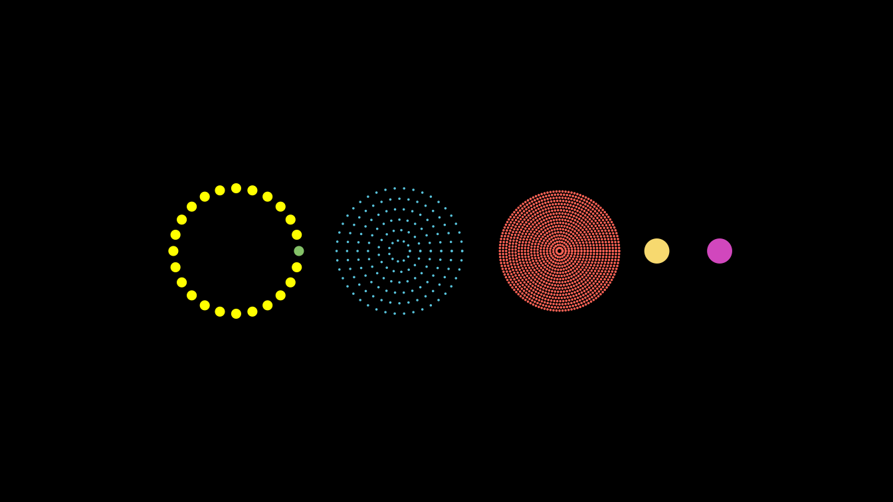